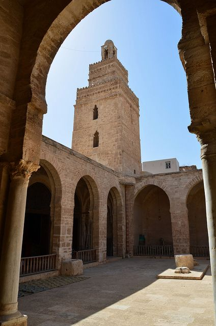
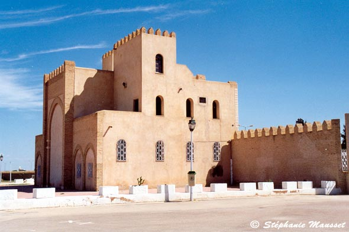
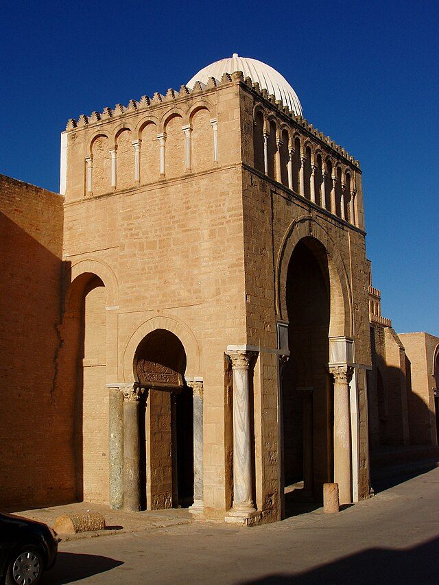
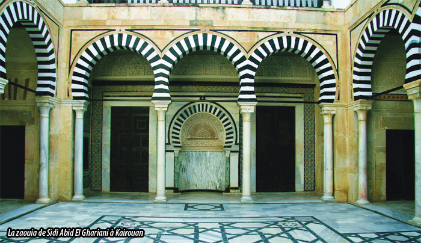
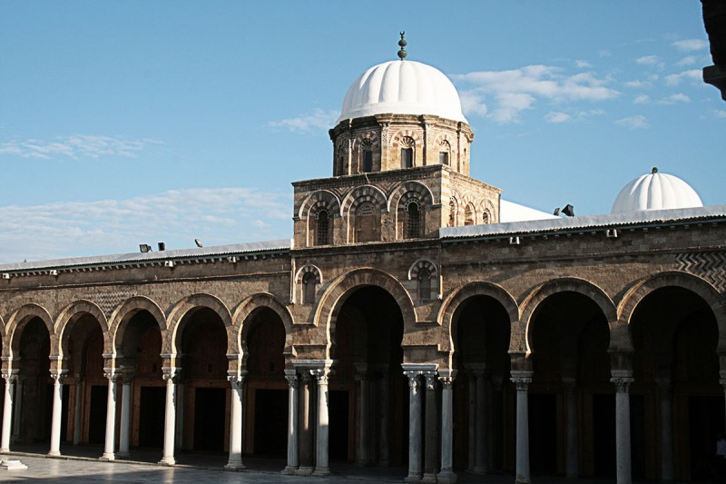
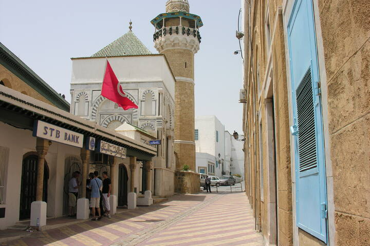
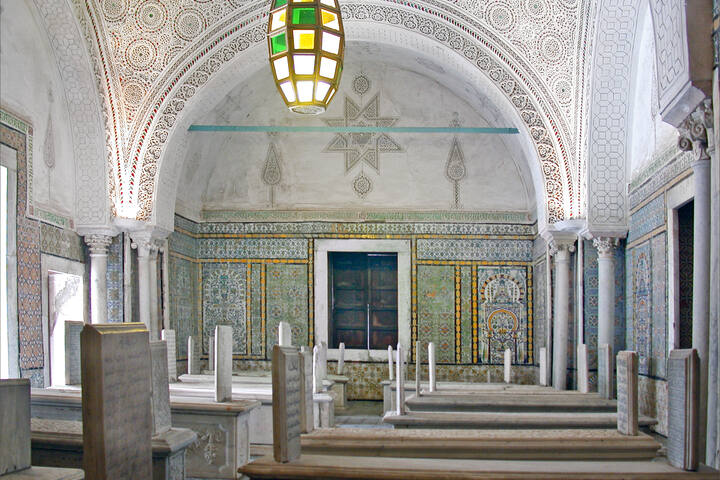
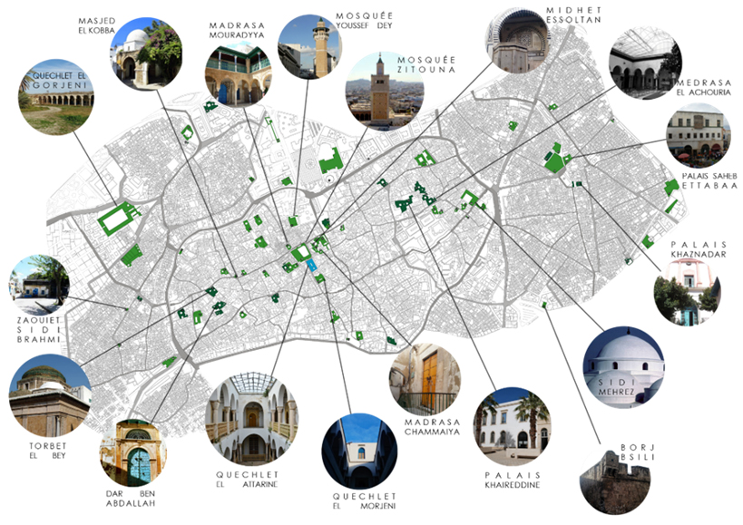
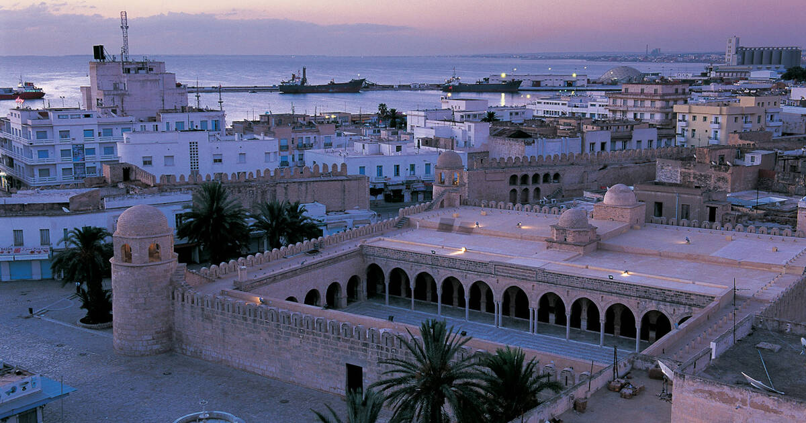

L'histoire musulmane de la Tunisie commence avec la conquête arabe au VIIe siècle. La région devient rapidement un centre majeur de la civilisation islamique, particulièrement sous les dynasties Aghlabide (800-909) et Fatimide (909-973), puis Hafside (1228-1574).
Kairouan, fondée en 670, devient la quatrième ville sainte de l'Islam et un centre intellectuel majeur. La période musulmane voit l'émergence d'une architecture distinctive, d'une tradition scientifique riche et d'une culture urbaine sophistiquée.
Gallerie








